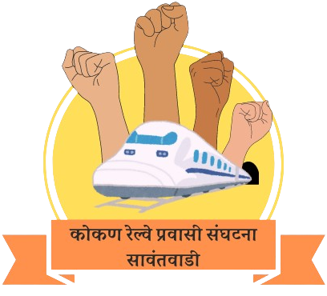

लढा सावंतवाडी टर्मिनसचा..!
लढा सावंतवाडी टर्मिनसचा..!
जनतेच्या अपेक्षांचा..!!
कोकण रेल्वे प्रवासी संघटना, सावंतवाडी आणि अखंड कोकण रेल्वे प्रवासी सेवा समिती सोबत, रेल्वे प्रवाशांना भेडसावणाऱ्या समस्या सोडवण्यासाठी अथक प्रयत्न करत आहे. सावंतवाडी टर्मिनसमधील सुधारणांना प्राधान्य देण्यासाठी आणि प्रवाशांच्या सुविधांचा दर्जा उंचावण्यासाठी रेल्वे प्रशासनाला जागृत करण्यावर त्यांचे सामूहिक प्रयत्न केंद्रित आहेत. उत्तम रेल्वे सेवांच्या या प्रवासात प्रत्येक आवाज महत्त्वाचा आहे. सर्वांसाठी अधिक आरामदायी आणि कार्यक्षम प्रवास अनुभव निर्माण करण्याच्या दिशेने निर्णायक पावले उचलण्याची विनंती करून, रेल्वे अधिकाऱ्यांना एक शक्तिशाली संदेश पाठवण्यासाठी खालील बटणावर क्लिक करून आता कारवाई करा. चला एकत्रितपणे, एक अर्थपूर्ण प्रभाव पाडूया आणि आपली रेल्वे प्रणाली प्रत्येक प्रवाशाच्या गरजा आणि अपेक्षा पूर्ण करेल याची खात्री करूया.